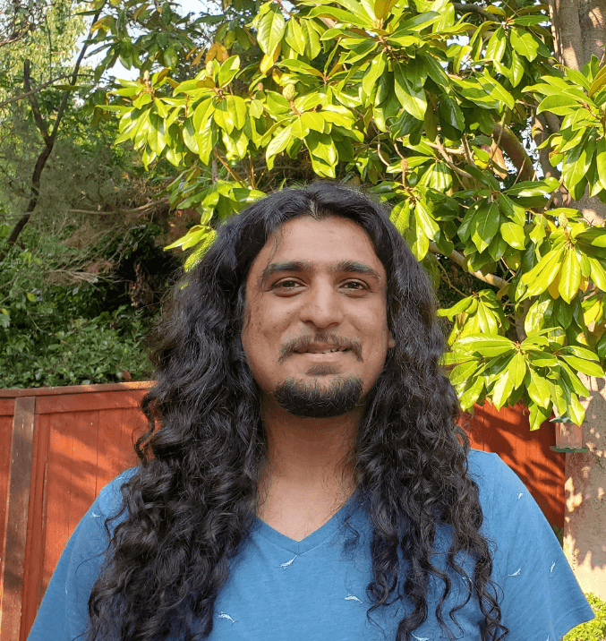

Sponsored by The Institute for Data Engineering and Science (IDEaS).
Supported by the School of Computer Science.
Foundations of Artificial Intelligence Seminar Series
by Foundations of Artificial Intelligence @ Georgia Institute of Technology
Welcome to the AI Seminar Series @ Georgia Tech, a seminar showcasing the latest research and developments in Artificial Intelligence. Our goal is to bring together students, postdocs, professors, and industry researchers to discuss a wide range of AI topics, including Machine Learning, Efficient AI, Symbolic AI, AI Theory, AI Systems, and the intersection of AI and Programming Languages and Software Engineering (PLSE).
Speaker Schedule and Abstracts
Future Talks
-
üé§Jos√© Cambronero
üèõÔ∏èGoogle
üìÖWednesday, April 2nd, 2024 | 3:30 PM - 4:30 PM (ET)
üìç1456 Classroom Klaus
ü§ùJoint PLSE + FoAI Seminar
üë•Organizers: Vijay Ganesh and Alex Orso
üìöTalk Title: Let the Agent Do It: Fixing, Validating, and Migrating Code at Google with LLM-based Software Agents
üìùAbstract The DevAI team at Google is tasked with developing AI-based features for our internal tools with the goal of making Google software developers more effective and efficient at their jobs. In this talk, I'll provide an overview of some of the unique challenges of applying AI to internal Google developer systems. These challenges motivate the need to build solutions tailored to Google, and I'll present two such LLM-based systems: a program repair agent and a test generation agent, which can respectively patch real Google bugs and generate tests that improve our confidence in these patches. In addition, I will describe broad use cases for AI-based code migration in our codebase. Throughout the talk, I'll focus on some of the open challenges we have faced and how those can inform ongoing research in software engineering and AI.üë§Bio
 José Cambronero is a staff software engineer in Google's DevAI team, where he researches new AI-based solutions to software engineering challenges encountered by Google developers. Prior to joining Google, José was a senior researcher in the PROSE team at Microsoft, working on program synthesis and repair. José holds a PhD in Computer Science from MIT, where he worked under the supervision of Martin Rinard. José is originally from Costa Rica but has bounced around a large portion of the USA's east coast.
José Cambronero is a staff software engineer in Google's DevAI team, where he researches new AI-based solutions to software engineering challenges encountered by Google developers. Prior to joining Google, José was a senior researcher in the PROSE team at Microsoft, working on program synthesis and repair. José holds a PhD in Computer Science from MIT, where he worked under the supervision of Martin Rinard. José is originally from Costa Rica but has bounced around a large portion of the USA's east coast. -
üé§Kevin Leyton-Brown
üèõÔ∏èUniversity of British Columbia
üìÖFriday, April 4th, 2025 | 4:00 PM - 5:00 PM (ET)
üìç1447 Classroom Klaus
ü§ùJoint FoAI + ARC + IDEaS Seminar
üë•Organizers: Vijay Ganesh, Will Perkins, and Juba Ziani
üìöTalk Title: STEER: Assessing the Economic Rationality of Large Language Models
üìùAbstract There is increasing interest in using LLMs as decision-making "agents." Doing so includes many degrees of freedom: which model should be used; how should it be prompted; should it be asked to introspect, conduct chain-of-thought reasoning, etc? Settling these questions -- and more broadly, determining whether an LLM agent is reliable enough to be trusted -- requires a methodology for assessing such an agent's economic rationality. This talk describes one. We survey the economic literature on both strategic and non-strategic decision making, taxonomizing 124 fine-grained "elements" that an agent should exhibit, each of which can be tested in up to 3 distinct ways, grounded in up to 10 distinct domains, and phrased according to 5 perspectives (first-person, second-person, etc). The generation of benchmark data across this combinatorial space is powered by a novel LLM-assisted data generation protocol that we dub auto-STEER, which generates questions by adapting handcrafted templates to new domains and perspectives. Because it offers an automated way of generating fresh questions, auto-STEER mitigates the risk that LLMs will be trained to overfit evaluation benchmarks; we thus hope that it will serve as a useful tool both for evaluating and fine-tuning models for years to come. Finally, we describe the results of a large-scale empirical experiment with 28 different LLMs, ranging from small open-source models to the current state of the art. We examined each model's ability to solve problems across our whole taxonomy and present the results across a range of prompting strategies and scoring metrics.üë§BioKevin Leyton-Brown is a professor of Computer Science and a Distinguished University Scholar at the University of British Columbia. He holds a Canada CIFAR AI Chair at the Alberta Machine Intelligence Institute and is an associate member of the Vancouver School of Economics. He received a PhD and an M.Sc. from Stanford University (2003; 2001) and a B.Sc. from McMaster University (1998).
Past Talks
-
üé§Mirco Giacobbe
üèõÔ∏èUniversity of Birmingham
üìÖThursday, March 6th, 2024 | 3:30 PM - 4:30 PM (ET)
üìçL5 Classroom Howey Physics
üìöTalk Title: Neural Model Checking
üìùAbstract Model checking aims to derive rigorous proofs for the correctness of systems and has traditionally relied on symbolic reasoning methods. In this talk, I will argue that model checking can also be effectively addressed using machine learning too. I will present a realm of approaches for formal verification that leverage neural networks to represent correctness certificates of systems, known as "neural certificates." This approach trains certificates from synthetic executions of the system and then validates them using symbolic reasoning techniques. Building upon the observation that checking a correctness certificate is much simpler than finding one, and that neural networks are an appropriate representation for such certificates, this results in a machine learning approach to model checking that is entirely unsupervised, formally sound, and practically effective. I will demonstrate the principles and experimental results of this approach in safety assurance of software, probabilistic systems, and control.üë§BioMirco Giacobbe is an Assistant Professor at the University of Birmingham. He previously held research positions at the University of Oxford and Fondazione Bruno Kessler. He obtained his PhD at the Institute and Science and Technology Austria and studied at the University of Trento and RWTH Aachen. His research interests lie between formal me¬≠thods and artificial intelligence, where he develops automatic techniques to assure that algorithmic systems are safe and trustworthy.
-
üé§Aishik Ghosh
üèõÔ∏èUC Irvine & Berkeley Lab
üìÖWednesday, March 5th, 2024 | 3:30 PM - 4:30 PM (ET)
üìç1456 Classroom Klaus
üìöTalk Title: Probing High-Dimensional Spaces in Particle Physics: From Simulation-Based Inference to Theory Design
üìùAbstract Particle physicists grapple with the largest data analysis problems, with the Large Hadron Collider soon to generate data at a rate of 100 TB/s. When confronted with extremely high-dimensional problems, physicists traditionally reduce the challenge to a lower dimensional representation where they can build intuition. I will discuss why such dramatic data reduction leads to loss of crucial information, and how neural networks can be combined with uncertainty quantification tools to perform statistical analysis directly using the high-dimensional data. This newly developed method is now being deployed as a service on DOE supercomputers, to usher in an extra of high-dimensional statistical analysis across particle physics experiments.
Similarly, a significant challenge in theoretical physics is the vast space of mathematical symmetries available to describe our Universe. Despite the dedicated efforts of theorists to explore this expanse, an overwhelming majority remains uncharted. I will discuss an ambitious new research direction in theoretical physics where, in collaboration with researchers at Georgia Tech, we leverage computational and AI tools to uncover new avenues for neutrino theory model building.üë§BioDr. Aishik Ghosh is a postdoctoral scholar at UC Irvine and an affiliate at Berkeley Lab, focusing on the development of high-dimensional statistical inference and uncertainty quantification methods using AI for particle and astrophysics. He has papers in physics and astrophysics journals, as well at NeurIPS. He also developed the first deep generative models for fast simulation to be deployed in a particle physics experiment in 2018. Recently, Aishik has been developing advanced symbolic regression and reinforcement learning methods to address challenges in theoretical neutrino physics in an interdisciplinary collaboration with Prof. Vijay Ganesh at Georgia Tech. Previously, he earned his PhD in particle physics from the University of Paris-Saclay. -
üé§Xia (Ben) Hu
üèõÔ∏èRice University
üìÖWednesday, February 12th, 2025 | 12:30 PM - 1:30 PM (ET)
üìçKlaus 1456
üìöTalk Title: Efficient LLM Serving via Lossy Computation
üìùAbstract Large language models (LLMs) have exhibited human-like conversational abilities. Yet, scaling LLMs to longer contexts, such as extracting information from lengthy articles‚Äîone of the most fundamental tasks in healthcare applications‚Äîposes significant challenges. The primary issues are their inability to handle contexts beyond pre-training lengths and system constraints that make deployment difficult, as memory requirements for inference increase with context length. The key idea to overcome these challenges is that LLMs are extremely robust to noise from lossy computation, such as low-precision computation. Following this insight, we will discuss recent advancements in serving LLMs at scale, particularly in handling longer contexts. To address the algorithmic challenge, I will share our recent work on extending LLM context length to at least 8√ó longer by coarsening the positional information of distant tokens. To address the system challenge, I will discuss our recent efforts in quantizing the intermediate states of past tokens to 2-bit numbers, leading to a 8x memory efficiency and 3.5x wall-clock time speedup without harming performance. Finally, I will highlight our latest projects applying LLMs in healthcare, particularly how we utilize retrieval techniques for long contexts to mitigate the hallucination problem in healthcare chatbots.üë§Bio
 Dr. Xia "Ben" Hu is an Associate Professor at Rice University in the Department of Computer Science. Dr. Hu has published over 200 papers in several major academic venues, including NeurIPS, ICLR, ICML, KDD, IJCAI, etc. An open-source package developed by his group, namely AutoKeras, has become the most used automated deep learning system on GitHub (with over 9,000 stars and 1,000 forks). Additionally, his work on LLM efficiency, deep collaborative filtering, anomaly detection, knowledge graphs, and fast interpretation has been incorporated into production systems at Hugging Face, TensorFlow, Apple, Bing, and Meta, respectively. His papers have received several Best Paper (Candidate) awards from venues such as ICML, WWW, WSDM, ICDM, AMIA, and INFORMS. He is the recipient of the NSF CAREER Award and the ACM SIGKDD Rising Star Award. His work has been cited more than 30,000 times with an h-index of 76. He served as General Co-Chair for WSDM 2020 and ICHI 2023, as well as Program Co-Chair for AIHC 2024 and CHASE 2025.
Dr. Xia "Ben" Hu is an Associate Professor at Rice University in the Department of Computer Science. Dr. Hu has published over 200 papers in several major academic venues, including NeurIPS, ICLR, ICML, KDD, IJCAI, etc. An open-source package developed by his group, namely AutoKeras, has become the most used automated deep learning system on GitHub (with over 9,000 stars and 1,000 forks). Additionally, his work on LLM efficiency, deep collaborative filtering, anomaly detection, knowledge graphs, and fast interpretation has been incorporated into production systems at Hugging Face, TensorFlow, Apple, Bing, and Meta, respectively. His papers have received several Best Paper (Candidate) awards from venues such as ICML, WWW, WSDM, ICDM, AMIA, and INFORMS. He is the recipient of the NSF CAREER Award and the ACM SIGKDD Rising Star Award. His work has been cited more than 30,000 times with an h-index of 76. He served as General Co-Chair for WSDM 2020 and ICHI 2023, as well as Program Co-Chair for AIHC 2024 and CHASE 2025. -
üé§Wuyang Chen
üèõÔ∏èSimon Fraser University
üìÖFriday, February 7th, 2025 | 4 PM - 5 PM (ET)
üìçKlaus 1447 |
üíªZoom
üìöTalk Title: Scientific Machine Learning in the New Era of AI: Reasoning, Foundations, Visualization
üìùAbstract The rapid advancements in artificial intelligence (AI), propelled by data-centric scaling laws, have significantly transformed our understanding and generation of both vision and language. However, natural media, such as images, videos, and languages, represent only a fraction of the modalities we encounter, leaving much of the physical world underexplored. We propose that Scientific Machine Learning (SciML) offers a knowledge-driven framework that complements data-driven AI, enabling us to better understand, visualize, and interact with the diverse complexities of the physical world.
In this talk, we will delve into the cutting-edge intersection of AI and SciML. First, we will discuss the automation of scientific analysis through multi-step reasoning grounded with formal languages, paving the way for more advanced control and interactions in scientific models. Second, we will explore how scaling scientific data can train foundation models that integrate multiphysics knowledge, thereby enhancing traditional simulations with a deeper understanding of physical principles. Finally, we will demonstrate how SciML can streamline the visualization of intricate geometries, while also showing how spatial intelligence can be adapted for more robust SciML modeling.üë§Bio Dr. Wuyang Chen is a tenure-track Assistant Professor in Computing Science at Simon Fraser University. Previously, he was a postdoctoral researcher in Statistics at the University of California, Berkeley. He obtained his Ph.D. in Electrical and Computer Engineering from the University of Texas at Austin in 2023. Dr. Chen's research focuses on scientific machine learning, theoretical understanding of deep networks, and related applications in foundation models, computer vision, and AutoML. He also works on domain adaptation/generalization and self-supervised learning. Dr. Chen has published papers at CVPR, ECCV, ICLR, ICML, NeurIPS, and other top conferences. Dr. Chen's research has been recognized by NSF (National Science Foundation) newsletter in 2022, INNS Doctoral Dissertation Award and the iSchools Doctoral Dissertation Award in 2024, and AAAI New Faculty Highlights in 2025. Dr. Chen is the host of the Foundation Models for Science workshop at NeurIPS 2024 and co-organized the 4th and 5th versions of the UG2+ workshop and challenge at CVPR in 2021 and 2022. He also serves on the board of the One World Seminar Series on the Mathematics of Machine Learning.
Dr. Wuyang Chen is a tenure-track Assistant Professor in Computing Science at Simon Fraser University. Previously, he was a postdoctoral researcher in Statistics at the University of California, Berkeley. He obtained his Ph.D. in Electrical and Computer Engineering from the University of Texas at Austin in 2023. Dr. Chen's research focuses on scientific machine learning, theoretical understanding of deep networks, and related applications in foundation models, computer vision, and AutoML. He also works on domain adaptation/generalization and self-supervised learning. Dr. Chen has published papers at CVPR, ECCV, ICLR, ICML, NeurIPS, and other top conferences. Dr. Chen's research has been recognized by NSF (National Science Foundation) newsletter in 2022, INNS Doctoral Dissertation Award and the iSchools Doctoral Dissertation Award in 2024, and AAAI New Faculty Highlights in 2025. Dr. Chen is the host of the Foundation Models for Science workshop at NeurIPS 2024 and co-organized the 4th and 5th versions of the UG2+ workshop and challenge at CVPR in 2021 and 2022. He also serves on the board of the One World Seminar Series on the Mathematics of Machine Learning. -
üé§Pavlo Molchanov
üèõÔ∏èNVIDIA Research
üìÖThursday, October 10th, 2024 | 12 PM - 1 PM (EDT)
üìçB5 Classroom in Boggs |
üíªZoom
üìöTalk Title: Efficiency in Large Language Models with Post-Training Compression
üìùAbstract Training large language models (LLMs) for various deployment scales and sizes traditionally involves training each variant from scratch, a process that is highly compute-intensive. In this talk, we explore three key techniques to significantly enhance LLM efficiency: (1) pruning and distillation, (2) Flexible LLM architecture with the Many-In-One concept, and (3) an advanced Parameter Efficient Finetuning Technique. Pruning and distillation can reduce pretraining costs by up to 40x, delivering models that are up to 16% more accurate than those trained from scratch. The Flexible LLM architecture allows the transformation of a single LLM into an infinite number of smaller sub-models, streamlining deployment across various applications. Lastly, we will discuss DoRa, a state-of-the-art parameter-efficient fine-tuning method based on weight decomposition, enabling efficient model fine-tuning with limited data.üë§BioPavlo Molchanov is a Distinguished Research Scientist and Team Manager at NVIDIA Research. Since 2023, he has been leading the Deep Learning Efficiency Team. He obtained a PhD from Tampere University of Technology, Finland, in 2014. During his studies, he received the Nokia Foundation Scholarship, GETA Graduate School grant, Best Paper Award, and Young Researcher Award at EuRAD. Recently, he has focused on efficiency in LLMs and multi-modal models: compression, NAS-like acceleration, novel architectures, and adaptive/conditional inference. His past research has led to several NVIDIA product integrations: hand, body, and facial keypoint estimation and recognition in DriveIX, Broadcast, Omniverse, Maxine; efficient vision backbones in TAO, developed compression techniques in TAO, NVIDIA AV, TRT Model Optimization; and small in-game LLMs.